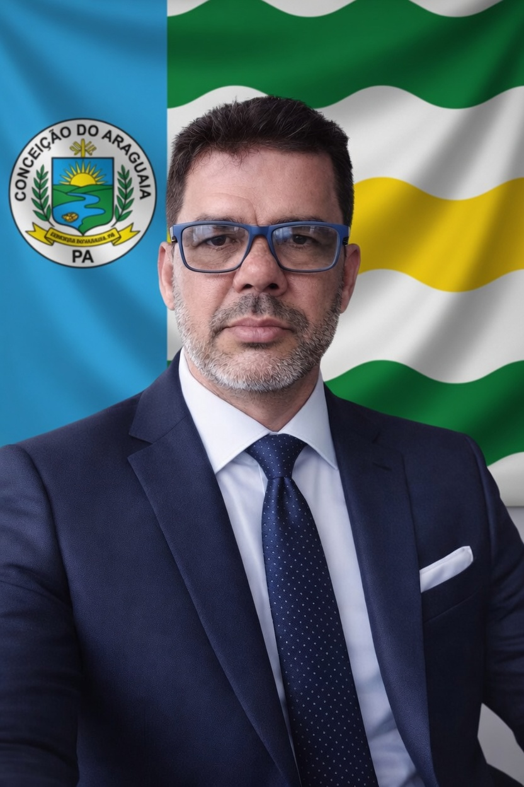

Este projeto faz parte da iniciativa CDA Sem Corrupção! 2028
Nosso compromisso é com a geração de empregos.

MÁRCIO RODRIGUES DE OLIVEIRA, nascido em Conceição do Araguaia, filho de Josué (Jesu) Machado de Oliveira e Maria Helena Rodrigues de Oliveira. Casado com Késia de Oliveira Quadros e pai da Maria Eduarda Marinho de Oliveira.
1º colocado no concurso de 2009 para Analista de Sistemas (atuando desde 2012).
Graduações em: Matemática, Engenharia de Software, Engenharia Civil e Engenharia de Segurança do Trabalho
ALINE VALENTINA, natural de Conceição do Araguaia (PA). Assistente Social e Tecnóloga em Gestão Pública.
Pós-graduada em Gestão do Terceiro Setor e Saúde Mental.
"Em minha função como Tecnóloga em Gestão Pública, não aceito respostas superficiais... Priorizo o cuidado humano e a gestão orientada a resultados."